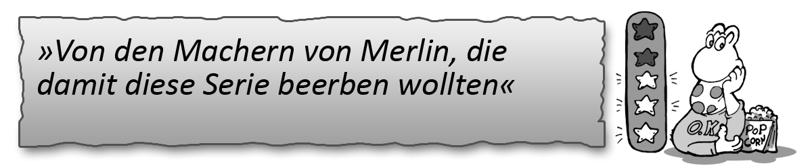
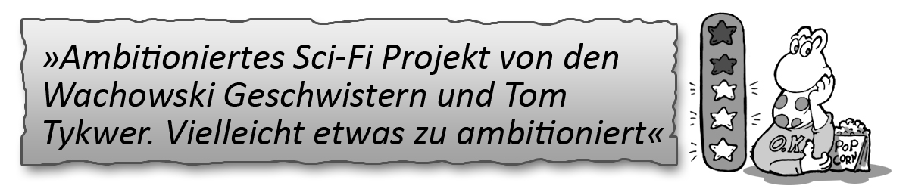

Atlantis
Wo: passion
Wann: 21.05.2015 20:15
Was: Staffel 2 (Neu)
Handlung: Jason wacht im mythischen Atlantis auf, wo Halbgötter und Helden miteinander Ringen, nachdem er mit einem U-Boot das Verschwinden seines Vaters untersuchen wollte. Und natürlich wird er in das Ränkespiel von Königen und Göttern hereingezogen.

Cloud Atlas - Der Wolkenatlas
Wo: Eins festival
Wann: 18.05.2015 20:15
Was: Wiederholung
Handlung: Sechs miteinander verwobene Schicksale über einen Zeitraum von mehreren Epochen. Von einem amerikanischen Anwalt aus dem Jahre 1849 bis zu einer postapokalyptischen Erde sind durch Reinkarnation die Leben von mehreren Seelen verbunden.
